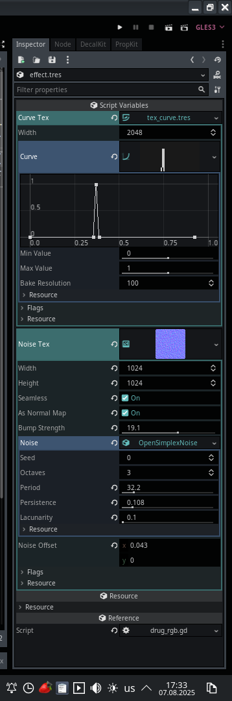
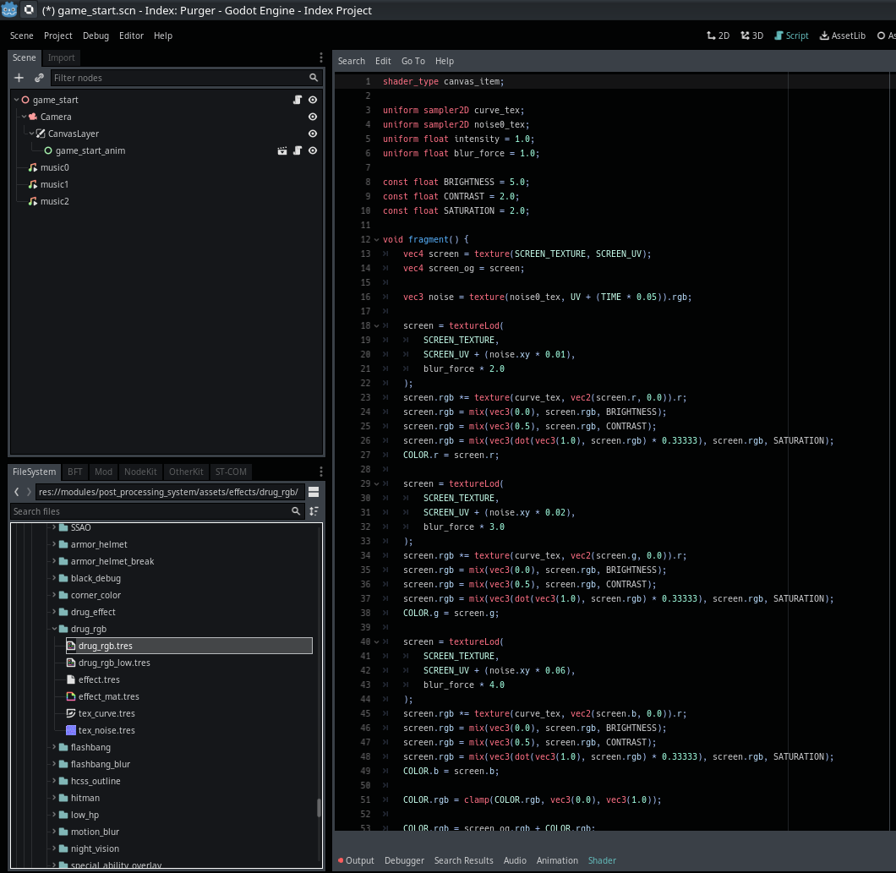

Module: post_processing_system
Documentation last edited: October 23, 2025 at 14:33 UTC
Description
Post-Processing System module that simplifies work with various post-processing effects making it easy to extend the set of currently existing effects.
PostProcessingSystem
itself is a glorified manager of an array of post-processing effects that are all extending
PostProcessingBase
while questioning their existence in this damn codebase. Keep in mind that base-class for effects extends
Resource
therefore it can be saved somewhere to illegally transport a
DrugRGBPostProcessing
resource file through your country's borderline. I'm sorry if it sounds too corny at this point, but wouldn't you become a drug smuggler this way? It sounds romantic in a way. Just transporting a flash drive with this resource in there. Configured for hallucinatory pleasure. I almost fell down with my face on my own keyboard when I thought what I'd write here. What are chances of anybody finding out what I write here anyways? And why I wanna spend my last money to do what I just said about the flash drive?
If you want to make your own precious post-processing effect, think twice. If you ignored these instructions and just skipped to the next line - you are the man.
"res://modules/post_processing_system/assets/effects/"
contains all effects, that are stored in the following pattern:
.
└── effects
└── EFFECT_NAME_HERE
└── effect.tres
Everything else doesn't really matter. You just store anything else as you wish. Please, be advised:
"effect.tres"
must be your own custom-written post-processing class that extends
PostProcessingBase
.
Example
I'll take one of the existing effects so you'd examine its corpse and learn from it.
Store your custom effects at res://modules/post_processing_system/src/effects please I beg you.
"res://modules/post_processing_system/src/effects/drug_rgb.gd"
# Handles RGB split and blur effects for drug/impairment visuals
# Creates psychedelic color separation and blur effects with configurable intensity
extends PostProcessingBase
class_name DrugRGBPostProcessing
# Texture defining the RGB color separation pattern
export(CurveTexture) var curve_tex
# Noise texture for effect distortion
export(NoiseTexture) var noise_tex
# Shader material implementing the visual effect
var shader_mat: ShaderMaterial
# Whether effect is currently active (use setter to toggle)
var active = false setget set_active
# Current effect intensity (0-1)
var intensity = 0.0
# Current blur strength (0-1)
var blur_force = 0.0
# Initializes the effect system
func custom_initialize():
# Load appropriate shader based on quality setting
var shader_name = "drug_rgb"
if Values.get_value("post_processing_quality", "high") == "low":
shader_name = "drug_rgb_low"
# Create and configure shader material
shader_mat = load_shader(shader_name)
shader_mat.set_shader_param("curve_tex", curve_tex)
shader_mat.set_shader_param("noise0_tex", noise_tex)
# Updates effect parameters each frame
func custom_update(delta: float):
# Handle intensity transitions
if active:
# Smooth fade in for main effect
intensity = lerp(intensity, 1.0, 1.0 * delta)
# Slower fade in for blur (creates staggered effect)
blur_force = lerp(blur_force, 1.0, 0.1 * delta)
else:
# Smooth fade out for main effect
intensity = lerp(intensity, 0.0, 0.3 * delta)
# Faster fade out for blur
blur_force = lerp(blur_force, 0.0, 0.2 * delta)
# Update shader parameters
shader_mat.set_shader_param("intensity", intensity)
shader_mat.set_shader_param("blur_force", blur_force)
# Enable/disable effect based on intensity threshold
if intensity <= 0.005 and is_enabled:
disable()
elif intensity >
= 0.005 and not is_enabled:
enable()
# Setter for active property - controls whether effect is enabled
func set_active(value: bool):
active = value


Basically you write your class like
DrugRGBPostProcessing
that does nothing but the utmost basic control of shader parameters. Shader... Just a shader doing the shit you desire. Resource just serves as a way to configure all the shit. The shit's done. You see the patterns, right? Good. And if you don't, get the hell out of here and go smug that flash drive with a
DrugRGBPostProcessing
resource on it and make the borderline officers question your sanity.
Have fun.
General Information
Root directories list
assets, docs, src
Nodes
None
Classes
Resources
DrugRGBPostProcessing
HitmanPostProcessing
HCSSOutlinePostProcessing
DrugEffectPostProcessing
SuppressionPostProcessing
SpecialAbilityOverlayPostProcessing
SSAOPostProcessing
CornerColorPostProcessing
NightVisionPostProcessing
BlackDebugPostProcessing
UnderwaterPostProcessing
ArmorHelmetBreakPostProcessing
MotionBlurPostProcessing
FlashbangPostProcessing
LowHPPostProcessing
FlashbangBlurPostProcessing
ArmorHelmetPostProcessing
VignettePostProcessing
PostProcessingBase
Other Scripts
None